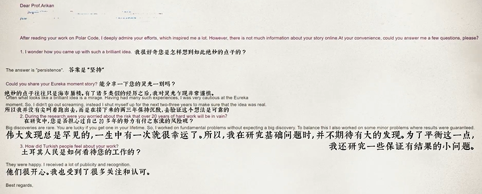

今天把昨天在b站上标题为”5G，华为，土耳其——我花了两个月，搞懂了5G背后的秘密”这个视频重新完整的看了一遍。看完之后，结合自己刚开始两个月的研究生生活，有一些感触，在此进行记录。
附上视频链接：
颁奖典礼
视频开端讲述了华为总裁任正非为Arikan——the father of Polor Code颁发代表最高荣誉的特别奖奖牌。
极化码——一种新的5G技术，是令华为成为5G时代的领跑者极其重要的部分。
如何度量信息
香农在通信的数学理论中第一次量化了信息，他认为信息的本质是消除信息的不确定性，利用概率的不确定性度量信息，这个不确定度称为：信息熵。
什么是信道容量
信道容量（最大互信息）是Arikan想要达到的目标，信道容量是指单位时间内能传输的信息量，是通信在理论上存在的上限。
什么是编码
为了减弱噪声，对信道进行编码，让信息以更好的方式进行传输。
香农极限
通过正确编码有可能让该信道以速率C传达信息，而错误频率或者疑义度可以小到让人满意，而这一表述对于任何大于C的速率都是不成立的。速率达于C将会是信息有更多的不确定性，因此引出了信息论的中心问题——有噪信道编码定理。
个人的思考
作为一个普通人，如何对展开对陌生知识的学习？
- 寻找有价值的科普资料
- 如果没有，从头开始——直接寻找该知识/理论的提出者，从他的相关文献内容中找到你所要学习知识的根源。
- 当你开始读其文献，发现依然无法理解时，尝试从文献的引文入手，深挖其理论根基和来源。

我们所称赞的，往往只是别人的平淡生活，但伟大往往诞生于平淡之中。